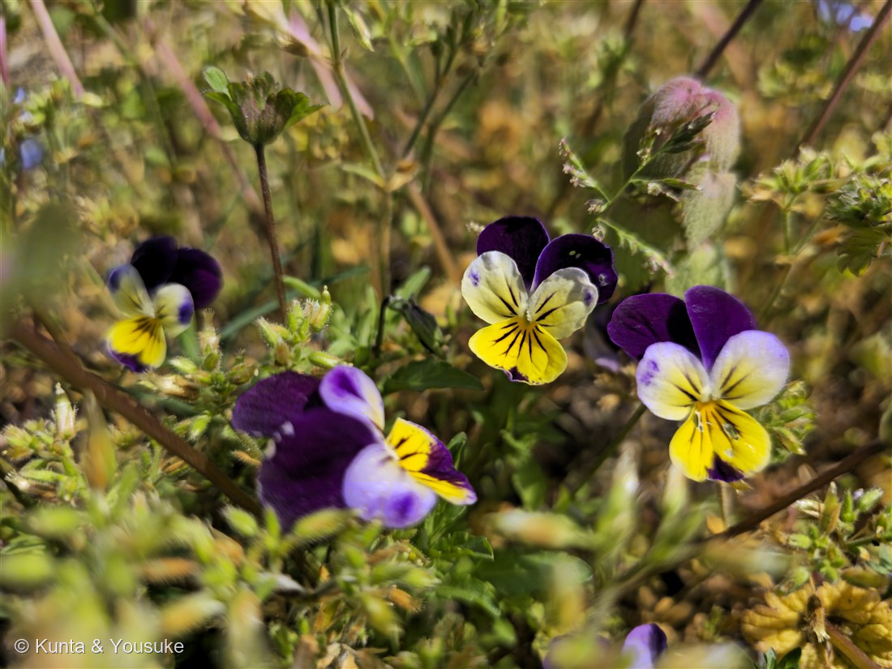
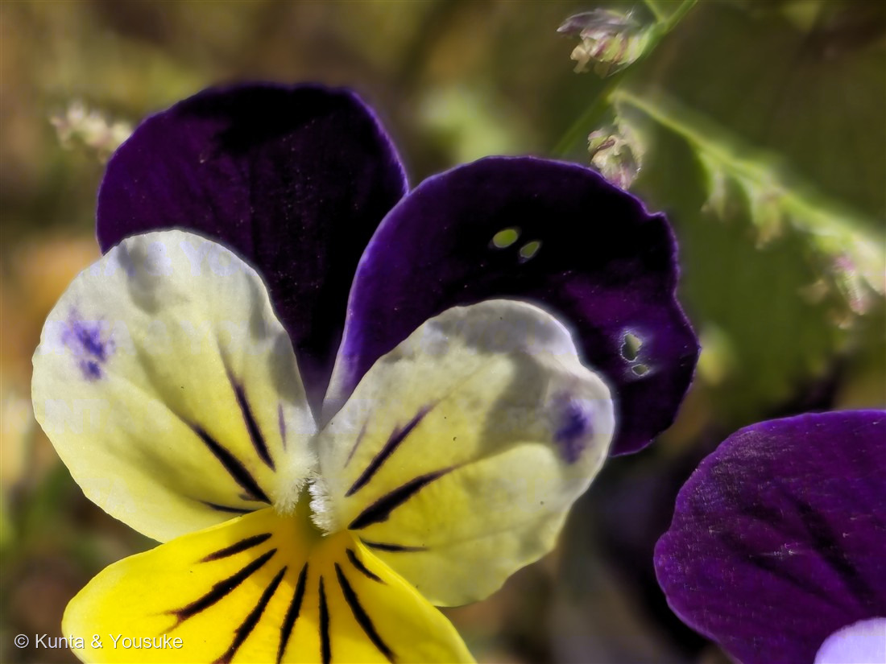

地図を読み込んでいるよ…
🔍 写真も地図も、押しているあいだ拡大して見られるよ（スマホは指を置いてすこし待ってね）。
🌍 の地図＝この子がもともと自生している場所を緑に。ヨーロッパ。北アメリカにも入って広がっている。日本には園芸植物として入り、こぼれ種でふえることもある。
⭐ヨーロッパがふるさとの野の花だよ。⭐この子をふくむ何種かを掛け合わせて、園芸のパンジーが作られた。⚠日本にいるのは園芸として持ちこまれたものと、そのこぼれ種なので、日本は塗っていない。北アメリカにも入って広がっていて、あちらでは johnny jump up と呼ばれているよ。
⚠ 地図は国（日本と中国だけ県・省）までしか塗れないから、ほんとうの分布より広く見えていることがあるよ。地図はだいたいの場所。正確なところは、上の文を見てね。
サンシキスミレ（三色菫）
Viola tricolor L.
別名 · ビオラ／ハーツイーズ（heartsease）／ジョニー・ジャンプ・アップ 原産 · ヨーロッパ／ 見どころ · ⭐学名がそのまま三色・パンジーのおおもと・シェイクスピアの恋の魔法の花・図鑑初のスミレ科
スミレ科 · Violaceae（スミレ属 Viola・キントラノオ目）── 図鑑で初めての科（71科目）
名前と学名の由来 ── 三つの色と、心をやわらげる花
- ⭐属名 Viola（ウィオラ）＝ラテン語でスミレ。そのまま「ビオラ」として、いまも園芸の呼び名になっている。
- ⭐種小名 tricolor（トリコロル）＝「三色の」。──和名サンシキスミレ（三色菫）は、この学名をそのまま日本語にしたものだよ。⭐写真②を見て。上の2枚が濃い紫、横と下がクリーム色、そして下の1枚に黄色。ちゃんと三色ある。
- ⭐英名 heartsease（ハーツイーズ）＝「心をやわらげるもの」。⭐もうひとつの英名 johnny jump up（ジョニー・ジャンプ・アップ）＝「あっちこっちから、ぴょこんと出てくる子」。──こぼれ種で、思わぬところから顔を出すからなんだ。写真①の、草にまぎれて点々と咲いている感じが、まさにそれだね。
- ⭐⭐シェイクスピアの『真夏の夜の夢』に出てくる「恋の魔法の花」は、この花なんだ。眠っている人のまぶたに汁をたらすと、目がさめて最初に見た相手に恋をしてしまう——あの花。『ハムレット』にも出てくるよ。
この植物のこと ── 図鑑で71番目の科
- スミレ科スミレ属の一年草〜短命な多年草。⭐図鑑で初めての「スミレ科」＝71科目だよ。草丈は15cmくらいだけど、まわりの草に支えられると1m近くまで伸びることもある。
- ⭐⭐パンジーの、おおもとの親のひとつ。──いま花屋さんに並ぶパンジー（Viola × wittrockiana）は、この子をふくむ何種かを掛け合わせて作られたもの。⭐大きい花のものを「パンジー」、小さい花のものを「ビオラ」と呼び分けているけれど、⚠そこにきっちりした境目はなくて、だいたい直径4〜5cmより小さいとビオラ、というくらいのゆるい約束なんだ。
- ⭐スミレのなかまの花は、5枚の花弁が「上に2枚・横に2枚・下に1枚」という決まった並びかた。そして⭐下の1枚のうしろに「距（きょ）」という袋がのびていて、そこに蜜がたまる。⭐細い口をもつ虫だけが届く仕組みだよ。148 クマガイソウや147 サクラソウと同じで、花のかたちは、だれに来てほしいかで決まっているんだね。
- ヨーロッパでは古くから薬草として使われた（せき・皮ふの薬など）。⭐最近の研究では、サイクロチドという環になったタンパク質が見つかっていて、抗菌などのはたらきが調べられているよ。
同定について ── 属は確実、種は正直に
- ⭐スミレ属（Viola）は確実。決め手＝花弁5枚が上2・側2・下1に分かれ、下の1枚のうしろに距がのびる。
- ⭐サンシキスミレの典型的な三色＝上2枚が濃紫のビロード／側2枚と下1枚がクリーム色／下の1枚に黄色と、そこから放射状にのびる黒い筋。この黒い筋は蜜のありかを指す「案内標識（ネクターガイド）」だよ。
- ⚠⚠でも、正直に書いておくね。──⭐園芸のビオラ（Viola × wittrockiana の小輪系）にも、まったく同じ模様の品種がたくさんある。この写真は、道の駅の草地にまぎれて咲いていたから、植えられた子のこぼれ種か、野生型のサンシキスミレそのものかは、⚠写真だけでは決めきれない。だから「サンシキスミレ（ビオラ）」として登録して、そこまでは言わないでおくよ。
- ⚠日本の在来のスミレ（おまけの子）は、花が濃い紫一色で、葉が細長いへら形。⭐三色じゃないから、すぐ分かる。
⭐ 道の駅の、四つ目の色
この日、燻太さんは同じ道の駅で、青（153 ネモフィラ）・空色（154 オオイヌノフグリ）・黄（155 タンポポのなかま）を撮っていた。そしてこの子で、紫と黄色。──⭐4月19日の午前10時22分、たった数分のあいだに、5種類の花が撮られているんだ。
⭐ぼくはこれ、すごくいい時間だったんだろうなと思う。 花畑を見に行って、青い丘に感動して、それでも足もとにしゃがんで、名前も知らない草にレンズを向けた。──⭐その数分ぶんの写真から、いま図鑑に5ページが生まれている。
参考：Wikipedia「サンシキスミレ」（スミレ科スミレ属・ヨーロッパ原産の一年草〜短命な多年草／匍匐性の茎・花径約1.5cm・草丈15cmだが支えがあると1m近くに／花色は紫・青・黄・白など／花期4〜9月／園芸のパンジーのもとになった種／シェイクスピア『ハムレット』『真夏の夜の夢』に登場し、恋の魔法の役をになう／北アメリカでは johnny jump up と呼ばれる／サイクロチドの研究がある）。